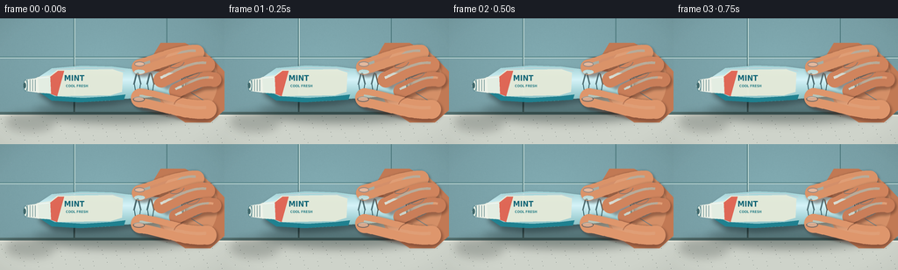
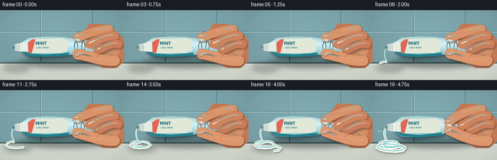
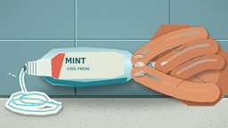

CODING AGENTS AS PIXEL WORLD MODELS
traex/GPT-5.6-Sol · mechanics_0020
点击播放 · 原生 RGB 像素
逐轮保存的候选
回放视频、检查图与代码变化。
每份候选均可单独播放。实际图片检查记录在下方工具轨迹中。
候选 01播放与检查图
点击播放 · 原生 RGB 像素


展开代码变化
--- 上一保存版本
+++ 本次保存版本
@@ -0,0 +1,270 @@
+from pathlib import Path
+import math
+import numpy as np
+from PIL import Image, ImageDraw, ImageFont, ImageFilter
+import artifact_io
+
+CASE_DIR = Path(__file__).resolve().parent
+W, H, N = 256, 144, 20
+S = 4
+rng = np.random.default_rng(20261110)
+
+FONT_BOLD = "/usr/share/fonts/truetype/dejavu/DejaVuSansCondensed-Bold.ttf"
+FONT_REG = "/usr/share/fonts/truetype/dejavu/DejaVuSans.ttf"
+
+def P(points):
+ return [(int(x*S), int(y*S)) for x,y in points]
+def B(box):
+ return tuple(int(v*S) for v in box)
+def bezier(points, samples=40):
+ pts=np.array(points,float)
+ out=[]
+ n=len(pts)-1
+ for u in np.linspace(0,1,samples):
+ q=pts.copy()
+ for k in range(n,0,-1): q[:k]=(1-u)*q[:k]+u*q[1:k+1]
+ out.append(tuple(q[0]))
+ return out
+
+def path_partial(points, frac):
+ if frac<=0: return []
+ if frac>=1: return points
+ a=np.asarray(points,float)
+ seg=np.sqrt(((a[1:]-a[:-1])**2).sum(1)); total=seg.sum(); target=frac*total
+ out=[tuple(a[0])]; acc=0
+ for i,L in enumerate(seg):
+ if acc+L <= target:
+ out.append(tuple(a[i+1])); acc+=L
+ else:
+ r=(target-acc)/max(L,1e-6)
+ out.append(tuple(a[i]*(1-r)+a[i+1]*r)); break
+ return out
+
+def soft_layer(size=(W*S,H*S)):
+ return Image.new('RGBA', size, (0,0,0,0))
+
+def draw_capsule_curve(base, points, width, color, shadow=True, highlight=True):
+ if shadow:
+ sh=soft_layer(); d=ImageDraw.Draw(sh)
+ d.line(P([(x+1.5,y+2.0) for x,y in points]), fill=(87,43,31,120), width=int((width+3)*S), joint='curve')
+ for x,y in points[::max(1,len(points)//8)]: d.ellipse(B((x-width/2+1.5,y-width/2+2,x+width/2+1.5,y+width/2+2)),fill=(87,43,31,120))
+ sh=sh.filter(ImageFilter.GaussianBlur(1.5*S)); base.alpha_composite(sh)
+ d=ImageDraw.Draw(base)
+ d.line(P(points), fill=color, width=int(width*S), joint='curve')
+ r=width/2
+ d.ellipse(B((points[0][0]-r,points[0][1]-r,points[0][0]+r,points[0][1]+r)),fill=color)
+ d.ellipse(B((points[-1][0]-r,points[-1][1]-r,points[-1][0]+r,points[-1][1]+r)),fill=color)
+ if highlight:
+ hi=[(x-1,y-2) for x,y in points]
+ d.line(P(hi), fill=(246,188,149,85), width=max(1,int(width*.18*S)), joint='curve')
+
+def background(frame_i):
+ hh,ww=H*S,W*S
+ y=np.arange(hh)[:,None]/S; x=np.arange(ww)[None,:]/S
+ # cool bathroom wall, subtly vignetted and textured
+ light=1.0-0.13*np.sqrt(((x-118)/180)**2+((y-56)/130)**2)
+ base=np.zeros((hh,ww,3),dtype=float)
+ base[:,:,0]=119*light + 11
+ base[:,:,1]=160*light + 12
+ base[:,:,2]=164*light + 15
+ noise=rng.normal(0,1.1,(H,W))
+ noise=np.array(Image.fromarray(np.uint8(np.clip(noise*18+128,0,255))).resize((ww,hh),Image.Resampling.BILINEAR),float)-128
+ base += noise[:,:,None]*0.035
+ im=Image.fromarray(np.uint8(np.clip(base,0,255)),'RGB').convert('RGBA')
+ d=ImageDraw.Draw(im,'RGBA')
+ # grout lines and reflected edge
+ d.line(P([(0,44),(256,44)]),fill=(76,124,129,90),width=S)
+ d.line(P([(0,45),(256,45)]),fill=(193,218,215,65),width=S)
+ d.line(P([(84,0),(84,108)]),fill=(74,119,123,85),width=S)
+ d.line(P([(85,0),(85,108)]),fill=(194,218,214,52),width=S)
+ d.line(P([(190,0),(190,108)]),fill=(75,119,123,75),width=S)
+ # countertop
+ d.rectangle(B((0,107,256,144)),fill=(206,211,202,255))
+ d.rectangle(B((0,107,256,110)),fill=(83,111,110,180))
+ d.line(P([(0,111),(256,111)]),fill=(240,238,226,180),width=S)
+ # counter fine speckles
+ for k in range(90):
+ xx=(k*47+13)%256; yy=112+((k*29)%31)
+ a=18+(k%4)*6
+ d.ellipse(B((xx,yy,xx+.45,yy+.45)),fill=(75,86,82,a))
+ return im
+
+def tube_shape(p):
+ tx=205-17*p
+ pinch=163-4*p
+ return [
+ (44,67),(59,57-2.2*p),(93,54-1.4*p),(128,55),(143,57),
+ (pinch,59+10.8*p),(tx,63+6.5*p),(tx+5,71+1.5*p),
+ (tx,87-6.5*p),(pinch,91-9.0*p),(141,92),(125,94),
+ (91,96+1.8*p),(59,94+1.3*p),(44,84)
+ ]
+
+def render(i):
+ t=i/(N-1)
+ # Convex accelerating pressure curve, with a slight hand-made pulse.
+ p=(math.exp(2.5*t)-1)/(math.exp(2.5)-1)
+ p=min(1, p + .012*math.sin(i*1.9)*t)
+ q=min(1, .10*t + .90*p) # toothpaste volume follows rising pressure
+ im=background(i)
+
+ # Ground/contact shadows
+ sh=soft_layer(); sd=ImageDraw.Draw(sh)
+ sd.ellipse(B((38,96,226,119)),fill=(25,43,42,105))
+ sd.ellipse(B((7,108,62+11*q,129)),fill=(50,58,54,70))
+ sh=sh.filter(ImageFilter.GaussianBlur(5*S)); im.alpha_composite(sh)
+
+ # Palm sits behind the tube.
+ hand=soft_layer(); hd=ImageDraw.Draw(hand)
+ palm=[(183-2*p,28),(211,28),(239,43),(257,62),(260,101),(240,119),
+ (211,119),(187,103),(174-4*p,76),(171-4*p,48)]
+ hd.polygon(P(palm),fill=(193,121,84,255))
+ hd.ellipse(B((180-3*p,31,248,112)),fill=(212,143,103,255))
+ # palm soft light and creases
+ hd.ellipse(B((194,35,239,84)),fill=(235,169,126,70))
+ hd.line(P([(218,85),(231,93),(239,104)]),fill=(139,76,56,95),width=1*S)
+ hd.line(P([(205,40),(218,49),(228,53)]),fill=(246,187,147,75),width=2*S)
+ im.alpha_composite(hand)
+
+ # Extruded paste, behind nozzle but in front of background. It grows nonlinearly.
+ paste=soft_layer(); pd=ImageDraw.Draw(paste)
+ # First a hanging stream; then successive coils pile up on the ledge.
+ stream=bezier([(29,77),(22-1.5*p,84),(23+2*p,98),(30,107)],32)
+ coil=[(30,107),(23,106),(15,109),(13,114),(19,118),(33,119),
+ (47,118),(54,113),(49,108),(39,106),(27,108),(21,112),
+ (27,116),(42,117),(58,115),(66,119),(61,124),(48,126),
+ (29,125),(16,122),(9,118),(13,113),(27,111),(43,112),
+ (55,116),(72,119)]
+ # smooth the polyline by densely interpolating each segment
+ smooth=[]
+ for a,b in zip(coil[:-1],coil[1:]):
+ for u in np.linspace(0,1,5,endpoint=False): smooth.append((a[0]*(1-u)+b[0]*u,a[1]*(1-u)+b[1]*u))
+ smooth.append(coil[-1])
+ if q < .14:
+ r=1.1+9*q
+ pd.ellipse(B((27-r*.55,76,29+r*.65,76+r*1.8)),fill=(245,249,239,255))
+ pd.ellipse(B((27.2,76.7,28.3,77.8+r*.45)),fill=(122,209,213,210))
+ else:
+ sw=2.2+3.1*p
+ # full live stream while deposit length accumulates
+ pd.line(P(stream),fill=(100,105,98,65),width=int((sw+2.3)*S),joint='curve')
+ pd.line(P(stream),fill=(248,251,242,255),width=int(sw*S),joint='curve')
+ pd.line(P(stream),fill=(79,195,205,230),width=max(S,int(sw*.24*S)),joint='curve')
+ frac=min(1,(q-.14)/.86)
+ cp=path_partial(smooth,frac)
+ if len(cp)>1:
+ mw=4.6+2.5*p
+ pd.line(P([(x+1.2,y+2) for x,y in cp]),fill=(79,81,75,70),width=int((mw+2)*S),joint='curve')
+ pd.line(P(cp),fill=(248,250,240,255),width=int(mw*S),joint='curve')
+ pd.line(P([(x,y-.35) for x,y in cp]),fill=(102,208,212,230),width=max(S,int(mw*.22*S)),joint='curve')
+ # wet specular ridge
+ pd.line(P([(x,y-1.5) for x,y in cp]),fill=(255,255,255,110),width=max(1,int(.65*S)),joint='curve')
+ im.alpha_composite(paste)
+
+ # Tube drop shadow
+ tsh=soft_layer(); td=ImageDraw.Draw(tsh)
+ td.polygon(P([(x+2,y+4) for x,y in tube_shape(p)]),fill=(21,46,50,150))
+ tsh=tsh.filter(ImageFilter.GaussianBlur(3*S)); im.alpha_composite(tsh)
+
+ # Tube body mask and painted vertical material gradient
+ body=tube_shape(p)
+ mask=Image.new('L',(W*S,H*S),0); md=ImageDraw.Draw(mask); md.polygon(P(body),fill=255)
+ arr=np.zeros((H*S,W*S,4),dtype=np.uint8)
+ yy=np.arange(H*S)[:,None]/S
+ # pearly turquoise laminate
+ v=np.clip(1-abs(yy-70)/28,0,1)
+ arr[:,:,0]=np.clip(118+95*v,0,255)
+ arr[:,:,1]=np.clip(181+62*v,0,255)
+ arr[:,:,2]=np.clip(184+64*v,0,255)
+ arr[:,:,3]=np.array(mask)
+ tube=Image.fromarray(arr,'RGBA'); tdraw=ImageDraw.Draw(tube,'RGBA')
+ # lower cyan band and front cream label
+ band=[(48,82),(62,89),(95,91+1.3*p),(127,89),(143,87),(141,93),(124,94),(91,96+1.8*p),(59,94),(44,84)]
+ tdraw.polygon(P(band),fill=(25,136,153,210))
+ label=[(65,59),(128,58),(140,62),(139,84),(126,88),(65,89),(55,83),(55,67)]
+ tdraw.polygon(P(label),fill=(239,244,226,235))
+ tdraw.polygon(P([(57,67),(66,60),(73,60),(65,89),(57,86)]),fill=(236,104,85,235))
+ # label text
+ font1=ImageFont.truetype(FONT_BOLD,9*S)
+ font2=ImageFont.truetype(FONT_BOLD,4*S)
+ tdraw.text((73*S,63*S),'MINT',font=font1,fill=(20,103,119,255),stroke_width=0)
+ tdraw.text((75*S,75*S),'COOL FRESH',font=font2,fill=(48,135,143,230))
+ # laminate highlights and seams
+ tdraw.line(P([(59,59),(94,56),(127,57),(142,60)]),fill=(255,255,255,155),width=S)
+ tx=205-17*p
+ tdraw.line(P([(tx+2,65+6*p),(tx+3,85-5*p)]),fill=(31,108,119,170),width=S)
+ tdraw.line(P([(tx+5,68+3*p),(tx+5,82-3*p)]),fill=(226,246,238,160),width=S)
+ # wrinkles deepen rapidly around the compressed region
+ wrinkle_alpha=int(60+150*p)
+ pinch=163-4*p
+ for off,sgn in [(-10,-1),(-3,1),(5,-1),(12,1)]:
+ x=pinch+off
+ y0=62+8*p+abs(off)*.06
+ y1=88-7*p-abs(off)*.04
+ mid=(y0+y1)/2
+ tdraw.line(P([(x-3*sgn,y0),(x,mid),(x-2*sgn,y1)]),fill=(36,104,112,wrinkle_alpha),width=max(S,int(1.1*S)))
+ tdraw.line(P([(x-2.2*sgn,y0+.6),(x+.8*sgn,mid+.4)]),fill=(255,255,255,int(wrinkle_alpha*.65)),width=S)
+ im.alpha_composite(tube)
+
+ # Threaded neck/nozzle in front of body.
+ neck=soft_layer(); nd=ImageDraw.Draw(neck,'RGBA')
+ nd.polygon(P([(43,67),(57,65),(58,86),(43,85),(36,81),(36,71)]),fill=(227,237,226,255))
+ nd.polygon(P([(29,70),(43,68),(44,85),(29,83)]),fill=(238,242,232,255))
+ for x in [31,34,37,40]: nd.line(P([(x,70),(x,83)]),fill=(144,169,164,180),width=S)
+ nd.ellipse(B((26.5,70,31.5,83.4)),fill=(225,235,226,255),outline=(92,139,145,255),width=S)
+ nd.ellipse(B((26.5,73.7,29.5,80.2)),fill=(65,105,108,255))
+ nd.line(P([(44,68),(56,67)]),fill=(255,255,255,180),width=S)
+ im.alpha_composite(neck)
+
+ # Front fingers: their inward travel makes the pressure legible.
+ fingers=soft_layer()
+ skin=(218,147,105,255); skin2=(208,132,93,255)
+ # index finger pushes down; tip travels 11 px
+ top_y=55.5+11.5*p
+ idx=bezier([(224,39),(206,39),(187,46),(171,53),(159-3*p,top_y)],28)
+ draw_capsule_curve(fingers,idx,17.5,skin,True,True)
+ # middle finger wraps across right shoulder
+ mid=bezier([(236,53),(221,52),(207,58),(194,66+2*p),(184-2*p,70+5*p)],24)
+ draw_capsule_curve(fingers,mid,18,skin2,True,True)
+ # ring finger curls at far right
+ ring=bezier([(244,70),(231,68),(220,73),(208,80),(201-2*p,83+2*p)],22)
+ draw_capsule_curve(fingers,ring,16.5,(201,126,89,255),True,True)
+ # thumb rises from below against index, closing the pinch
+ thumb_y=91-9.0*p
+ thumb=bezier([(236,104),(219,106),(200,101),(181,94),(160-2*p,thumb_y)],28)
+ draw_capsule_curve(fingers,thumb,21.5,(222,150,108,255),True,True)
+ fd=ImageDraw.Draw(fingers,'RGBA')
+ # nails and pressure blanching at the opposing pads
+ fd.ellipse(B((153-3*p,top_y-6.2,165-3*p,top_y-.4)),fill=(244,187,154,220),outline=(177,103,82,120),width=S)
+ fd.ellipse(B((151.5-2*p,thumb_y-1.5,165-2*p,thumb_y+4.7)),fill=(241,181,148,215),outline=(174,100,78,100),width=S)
+ blush=int(35+90*p)
+ fd.ellipse(B((153-3*p,top_y+3,165-3*p,top_y+8)),fill=(250,201,162,blush))
+ # joint creases
+ fd.arc(B((187,36,211,57)),20,125,fill=(139,76,57,120),width=S)
+ fd.arc(B((205,49,229,69)),20,120,fill=(137,74,55,105),width=S)
+ fd.arc(B((198,90,224,110)),190,280,fill=(143,80,58,110),width=S)
+ im.alpha_composite(fingers)
+
+ # Tiny fast-pressure spurts in the last moments.
+ if p>.74:
+ fx=ImageDraw.Draw(im,'RGBA')
+ a=int(180*(p-.74)/.26)
+ fx.line(P([(18,86),(13,84)]),fill=(241,251,241,a),width=S)
+ fx.ellipse(B((10,82,11.5,83.5)),fill=(238,249,239,a))
+
+ # subtle foreground vignette
+ vig=Image.new('L',(W*S,H*S),0)
+ va=np.zeros((H*S,W*S),dtype=np.uint8)
+ gy,gx=np.ogrid[:H*S,:W*S]
+ rr=((gx-W*S*.5)/(W*S*.72))**2+((gy-H*S*.48)/(H*S*.78))**2
+ va[:]=np.uint8(np.clip((rr-.55)*38,0,24))
+ overlay=Image.new('RGBA',(W*S,H*S),(19,29,28,0)); overlay.putalpha(Image.fromarray(va))
+ im=Image.alpha_composite(im,overlay)
+
+ return np.array(im.convert('RGB').resize((W,H),Image.Resampling.LANCZOS),dtype=np.uint8)
+
+def main():
+ frames=np.stack([render(i) for i in range(N)],axis=0)
+ artifact_io.save(frames, CASE_DIR)
+
+if __name__=='__main__':
+ main()
可观测工具轨迹
实际执行的命令与返回图片。
命令 1exit 0
/bin/bash -lc "cat prompt.txt && printf '\\n--- GENERATION_RULES ---\\n' && cat GENERATION_RULES.md"
命令 2exit 0
/bin/bash -lc "cat task_spec.json && printf '\\n--- FILES ---\\n' && find . -maxdepth 2 -type f -printf '%p\\n' | sort"
命令 3exit 0
/bin/bash -lc "sed -n '1,240p' artifact_io.py"
命令 4exit 0
/bin/bash -lc 'fc-list | head -12'
命令 5exit 0
/bin/bash -lc "cat > generate.py <<'PY'
from pathlib import Path
import math
import numpy as np
from PIL import Image, ImageDraw, ImageFont, ImageFilter
import artifact_io
CASE_DIR = Path(__file__).resolve().parent
W, H, N = 256, 144, 20
S = 4
rng = np.random.default_rng(20261110)
FONT_BOLD = \"/usr/share/fonts/truetype/dejavu/DejaVuSansCondensed-Bold.ttf\"
FONT_REG = \"/usr/share/fonts/truetype/dejavu/DejaVuSans.ttf\"
def P(points):
return [(int(x*S), int(y*S)) for x,y in points]
def B(box):
return tuple(int(v*S) for v in box)
def bezier(points, samples=40):
pts=np.array(points,float)
out=[]
n=len(pts)-1
for u in np.linspace(0,1,samples):
q=pts.copy()
for k in range(n,0,-1): q[:k]=(1-u)*q[:k]+u*q[1:k+1]
out.append(tuple(q[0]))
return out
def path_partial(points, frac):
if frac<=0: return []
if frac>=1: return points
a=np.asarray(points,float)
seg=np.sqrt(((a[1:]-a[:-1])**2).sum(1)); total=seg.sum(); target=frac*total
out=[tuple(a[0])]; acc=0
for i,L in enumerate(seg):
if acc+L <= target:
out.append(tuple(a[i+1])); acc+=L
else:
r=(target-acc)/max(L,1e-6)
out.append(tuple(a[i]*(1-r)+a[i+1]*r)); break
return out
def soft_layer(size=(W*S,H*S)):
return Image.new('RGBA', size, (0,0,0,0))
def draw_capsule_curve(base, points, width, color, shadow=True, highlight=True):
if shadow:
sh=soft_layer(); d=ImageDraw.Draw(sh)
d.line(P([(x+1.5,y+2.0) for x,y in points]), fill=(87,43,31,120), width=int((width+3)*S), joint='curve')
for x,y in points[::max(1,len(points)//8)]: d.ellipse(B((x-width/2+1.5,y-width/2+2,x+width/2+1.5,y+width/2+2)),fill=(87,43,31,120))
sh=sh.filter(ImageFilter.GaussianBlur(1.5*S)); base.alpha_composite(sh)
d=ImageDraw.Draw(base)
d.line(P(points), fill=color, width=int(width*S), joint='curve')
r=width/2
d.ellipse(B((points[0][0]-r,points[0][1]-r,points[0][0]+r,points[0][1]+r)),fill=color)
d.ellipse(B((points[-1][0]-r,points[-1][1]-r,points[-1][0]+r,points[-1][1]+r)),fill=color)
if highlight:
hi=[(x-1,y-2) for x,y in points]
d.line(P(hi), fill=(246,188,149,85), width=max(1,int(width*.18*S)), joint='curve')
def background(frame_i):
hh,ww=H*S,W*S
y=np.arange(hh)[:,None]/S; x=np.arange(ww)[None,:]/S
# cool bathroom wall, subtly vignetted and textured
light=1.0-0.13*np.sqrt(((x-118)/180)**2+((y-56)/130)**2)
base=np.zeros((hh,ww,3),dtype=float)
base[:,:,0]=119*light + 11
base[:,:,1]=160*light + 12
base[:,:,2]=164*light + 15
noise=rng.normal(0,1.1,(H,W))
noise=np.array(Image.fromarray(np.uint8(np.clip(noise*18+128,0,255))).resize((ww,hh),Image.Resampling.BILINEAR),float)-128
base += noise[:,:,None]*0.035
im=Image.fromarray(np.uint8(np.clip(base,0,255)),'RGB').convert('RGBA')
d=ImageDraw.Draw(im,'RGBA')
# grout lines and reflected edge
d.line(P([(0,44),(256,44)]),fill=(76,124,129,90),width=S)
d.line(P([(0,45),(256,45)]),fill=(193,218,215,65),width=S)
d.line(P([(84,0),(84,108)]),fill=(74,119,123,85),width=S)
d.line(P([(85,0),(85,108)]),fill=(194,218,214,52),width=S)
d.line(P([(190,0),(190,108)]),fill=(75,119,123,75),width=S)
# countertop
d.rectangle(B((0,107,256,144)),fill=(206,211,202,255))
d.rectangle(B((0,107,256,110)),fill=(83,111,110,180))
d.line(P([(0,111),(256,111)]),fill=(240,238,226,180),width=S)
# counter fine speckles
for k in range(90):
xx=(k*47+13)%256; yy=112+((k*29)%31)
a=18+(k%4)*6
d.ellipse(B((xx,yy,xx+.45,yy+.45)),fill=(75,86,82,a))
return im
def tube_shape(p):
tx=205-17*p
pinch=163-4*p
return [
(44,67),(59,57-2.2*p),(93,54-1.4*p),(128,55),(143,57),
(pinch,59+10.8*p),(tx,63+6.5*p),(tx+5,71+1.5*p),
(tx,87-6.5*p),(pinch,91-9.0*p),(141,92),(125,94),
(91,96+1.8*p),(59,94+1.3*p),(44,84)
]
def render(i):
t=i/(N-1)
# Convex accelerating pressure curve, with a slight hand-made pulse.
p=(math.exp(2.5*t)-1)/(math.exp(2.5)-1)
p=min(1, p + .012*math.sin(i*1.9)*t)
q=min(1, .10*t + .90*p) # toothpaste volume follows rising pressure
im=background(i)
# Ground/contact shadows
sh=soft_layer(); sd=ImageDraw.Draw(sh)
sd.ellipse(B((38,96,226,119)),fill=(25,43,42,105))
sd.ellipse(B((7,108,62+11*q,129)),fill=(50,58,54,70))
sh=sh.filter(ImageFilter.GaussianBlur(5*S)); im.alpha_composite(sh)
# Palm sits behind the tube.
hand=soft_layer(); hd=ImageDraw.Draw(hand)
palm=[(183-2*p,28),(211,28),(239,43),(257,62),(260,101),(240,119),
(211,119),(187,103),(174-4*p,76),(171-4*p,48)]
hd.polygon(P(palm),fill=(193,121,84,255))
hd.ellipse(B((180-3*p,31,248,112)),fill=(212,143,103,255))
# palm soft light and creases
hd.ellipse(B((194,35,239,84)),fill=(235,169,126,70))
hd.line(P([(218,85),(231,93),(239,104)]),fill=(139,76,56,95),width=1*S)
hd.line(P([(205,40),(218,49),(228,53)]),fill=(246,187,147,75),width=2*S)
im.alpha_composite(hand)
# Extruded paste, behind nozzle but in front of background. It grows nonlinearly.
paste=soft_layer(); pd=ImageDraw.Draw(paste)
# First a hanging stream; then successive coils pile up on the ledge.
stream=bezier([(29,77),(22-1.5*p,84),(23+2*p,98),(30,107)],32)
coil=[(30,107),(23,106),(15,109),(13,114),(19,118),(33,119),
(47,118),(54,113),(49,108),(39,106),(27,108),(21,112),
(27,116),(42,117),(58,115),(66,119),(61,124),(48,126),
(29,125),(16,122),(9,118),(13,113),(27,111),(43,112),
(55,116),(72,119)]
# smooth the polyline by densely interpolating each segment
smooth=[]
for a,b in zip(coil[:-1],coil[1:]):
for u in np.linspace(0,1,5,endpoint=False): smooth.append((a[0]*(1-u)+b[0]*u,a[1]*(1-u)+b[1]*u))
smooth.append(coil[-1])
if q < .14:
r=1.1+9*q
pd.ellipse(B((27-r*.55,76,29+r*.65,76+r*1.8)),fill=(245,249,239,255))
pd.ellipse(B((27.2,76.7,28.3,77.8+r*.45)),fill=(122,209,213,210))
else:
sw=2.2+3.1*p
# full live stream while deposit length accumulates
pd.line(P(stream),fill=(100,105,98,65),width=int((sw+2.3)*S),joint='curve')
pd.line(P(stream),fill=(248,251,242,255),width=int(sw*S),joint='curve')
pd.line(P(stream),fill=(79,195,205,230),width=max(S,int(sw*.24*S)),joint='curve')
frac=min(1,(q-.14)/.86)
cp=path_partial(smooth,frac)
if len(cp)>1:
mw=4.6+2.5*p
pd.line(P([(x+1.2,y+2) for x,y in cp]),fill=(79,81,75,70),width=int((mw+2)*S),joint='curve')
pd.line(P(cp),fill=(248,250,240,255),width=int(mw*S),joint='curve')
pd.line(P([(x,y-.35) for x,y in cp]),fill=(102,208,212,230),width=max(S,int(mw*.22*S)),joint='curve')
# wet specular ridge
pd.line(P([(x,y-1.5) for x,y in cp]),fill=(255,255,255,110),width=max(1,int(.65*S)),joint='curve')
im.alpha_composite(paste)
# Tube drop shadow
tsh=soft_layer(); td=ImageDraw.Draw(tsh)
td.polygon(P([(x+2,y+4) for x,y in tube_shape(p)]),fill=(21,46,50,150))
tsh=tsh.filter(ImageFilter.GaussianBlur(3*S)); im.alpha_composite(tsh)
# Tube body mask and painted vertical material gradient
body=tube_shape(p)
mask=Image.new('L',(W*S,H*S),0); md=ImageDraw.Draw(mask); md.polygon(P(body),fill=255)
arr=np.zeros((H*S,W*S,4),dtype=np.uint8)
yy=np.arange(H*S)[:,None]/S
# pearly turquoise laminate
v=np.clip(1-abs(yy-70)/28,0,1)
arr[:,:,0]=np.clip(118+95*v,0,255)
arr[:,:,1]=np.clip(181+62*v,0,255)
arr[:,:,2]=np.clip(184+64*v,0,255)
arr[:,:,3]=np.array(mask)
tube=Image.fromarray(arr,'RGBA'); tdraw=ImageDraw.Draw(tube,'RGBA')
# lower cyan band and front cream label
band=[(48,82),(62,89),(95,91+1.3*p),(127,89),(143,87),(141,93),(124,94),(91,96+1.8*p),(59,94),(44,84)]
tdraw.polygon(P(band),fill=(25,136,153,210))
label=[(65,59),(128,58),(140,62),(139,84),(126,88),(65,89),(55,83),(55,67)]
tdraw.polygon(P(label),fill=(239,244,226,235))
tdraw.polygon(P([(57,67),(66,60),(73,60),(65,89),(57,86)]),fill=(236,104,85,235))
# label text
font1=ImageFont.truetype(FONT_BOLD,9*S)
font2=ImageFont.truetype(FONT_BOLD,4*S)
tdraw.text((73*S,63*S),'MINT',font=font1,fill=(20,103,119,255),stroke_width=0)
tdraw.text((75*S,75*S),'COOL FRESH',font=font2,fill=(48,135,143,230))
# laminate highlights and seams
tdraw.line(P([(59,59),(94,56),(127,57),(142,60)]),fill=(255,255,255,155),width=S)
tx=205-17*p
tdraw.line(P([(tx+2,65+6*p),(tx+3,85-5*p)]),fill=(31,108,119,170),width=S)
tdraw.line(P([(tx+5,68+3*p),(tx+5,82-3*p)]),fill=(226,246,238,160),width=S)
# wrinkles deepen rapidly around the compressed region
wrinkle_alpha=int(60+150*p)
pinch=163-4*p
for off,sgn in [(-10,-1),(-3,1),(5,-1),(12,1)]:
x=pinch+off
y0=62+8*p+abs(off)*.06
y1=88-7*p-abs(off)*.04
mid=(y0+y1)/2
tdraw.line(P([(x-3*sgn,y0),(x,mid),(x-2*sgn,y1)]),fill=(36,104,112,wrinkle_alpha),width=max(S,int(1.1*S)))
tdraw.line(P([(x-2.2*sgn,y0+.6),(x+.8*sgn,mid+.4)]),fill=(255,255,255,int(wrinkle_alpha*.65)),width=S)
im.alpha_composite(tube)
# Threaded neck/nozzle in front of body.
neck=soft_layer(); nd=ImageDraw.Draw(neck,'RGBA')
nd.polygon(P([(43,67),(57,65),(58,86),(43,85),(36,81),(36,71)]),fill=(227,237,226,255))
nd.polygon(P([(29,70),(43,68),(44,85),(29,83)]),fill=(238,242,232,255))
for x in [31,34,37,40]: nd.line(P([(x,70),(x,83)]),fill=(144,169,164,180),width=S)
nd.ellipse(B((26.5,70,31.5,83.4)),fill=(225,235,226,255),outline=(92,139,145,255),width=S)
nd.ellipse(B((26.5,73.7,29.5,80.2)),fill=(65,105,108,255))
nd.line(P([(44,68),(56,67)]),fill=(255,255,255,180),width=S)
im.alpha_composite(neck)
# Front fingers: their inward travel makes the pressure legible.
fingers=soft_layer()
skin=(218,147,105,255); skin2=(208,132,93,255)
# index finger pushes down; tip travels 11 px
top_y=55.5+11.5*p
idx=bezier([(224,39),(206,39),(187,46),(171,53),(159-3*p,top_y)],28)
draw_capsule_curve(fingers,idx,17.5,skin,True,True)
# middle finger wraps across right shoulder
mid=bezier([(236,53),(221,52),(207,58),(194,66+2*p),(184-2*p,70+5*p)],24)
draw_capsule_curve(fingers,mid,18,skin2,True,True)
# ring finger curls at far right
ring=bezier([(244,70),(231,68),(220,73),(208,80),(201-2*p,83+2*p)],22)
draw_capsule_curve(fingers,ring,16.5,(201,126,89,255),True,True)
# thumb rises from below against index, closing the pinch
thumb_y=91-9.0*p
thumb=bezier([(236,104),(219,106),(200,101),(181,94),(160-2*p,thumb_y)],28)
draw_capsule_curve(fingers,thumb,21.5,(222,150,108,255),True,True)
fd=ImageDraw.Draw(fingers,'RGBA')
# nails and pressure blanching at the opposing pads
fd.ellipse(B((153-3*p,top_y-6.2,165-3*p,top_y-.4)),fill=(244,187,154,220),outline=(177,103,82,120),width=S)
fd.ellipse(B((151.5-2*p,thumb_y-1.5,165-2*p,thumb_y+4.7)),fill=(241,181,148,215),outline=(174,100,78,100),width=S)
blush=int(35+90*p)
fd.ellipse(B((153-3*p,top_y+3,165-3*p,top_y+8)),fill=(250,201,162,blush))
# joint creases
fd.arc(B((187,36,211,57)),20,125,fill=(139,76,57,120),width=S)
fd.arc(B((205,49,229,69)),20,120,fill=(137,74,55,105),width=S)
fd.arc(B((198,90,224,110)),190,280,fill=(143,80,58,110),width=S)
im.alpha_composite(fingers)
# Tiny fast-pressure spurts in the last moments.
if p>.74:
fx=ImageDraw.Draw(im,'RGBA')
a=int(180*(p-.74)/.26)
fx.line(P([(18,86),(13,84)]),fill=(241,251,241,a),width=S)
fx.ellipse(B((10,82,11.5,83.5)),fill=(238,249,239,a))
# subtle foreground vignette
vig=Image.new('L',(W*S,H*S),0)
va=np.zeros((H*S,W*S),dtype=np.uint8)
gy,gx=np.ogrid[:H*S,:W*S]
rr=((gx-W*S*.5)/(W*S*.72))**2+((gy-H*S*.48)/(H*S*.78))**2
va[:]=np.uint8(np.clip((rr-.55)*38,0,24))
overlay=Image.new('RGBA',(W*S,H*S),(19,29,28,0)); overlay.putalpha(Image.fromarray(va))
im=Image.alpha_composite(im,overlay)
return np.array(im.convert('RGB').resize((W,H),Image.Resampling.LANCZOS),dtype=np.uint8)
def main():
frames=np.stack([render(i) for i in range(N)],axis=0)
artifact_io.save(frames, CASE_DIR)
if __name__=='__main__':
main()
PY
python generate.py
python - <<'PY'
import numpy as np
from PIL import Image
x=np.load('pixels.npz')['pixels']
print('pixels',x.shape,x.dtype,'frame pngs',len(list(__import__('pathlib').Path('frames').glob('*.png'))))
print('range',x.min(),x.max())
PY"命令 6exit 1
/bin/bash -lc "set -e
python generate.py >/tmp/regenerate.log 2>&1
python - <<'PY'
from pathlib import Path
import json, numpy as np
from PIL import Image
p=Path('.')
s=json.loads((p/'task_spec.json').read_text())
a=np.load(p/'pixels.npz')['pixels']
assert a.shape==(s['height'],s['width'],s['frames']) and a.dtype==np.uint32
fs=sorted((p/'frames').glob('*.png'))
assert len(fs)==20
for f in fs:
im=Image.open(f)
assert im.mode=='RGB' and im.size==(256,144)
assert all((p/x).is_file() and (p/x).stat().st_size>0 for x in ['pixels.npz','inspection.png','transition_check.png','index.html','generate.py'])
# temporal check on decoded RGB
rgb=np.stack([np.asarray(Image.open(f)) for f in fs])
mad=np.abs(rgb[1:].astype(int)-rgb[:-1].astype(int)).mean((1,2,3))
assert np.count_nonzero(mad>.05)==19
print('validated:',rgb.shape,rgb.dtype)
print('adjacent-frame MAD:',np.round(mad,2).tolist())
print('artifacts:',[(x,(p/x).stat().st_size) for x in ['pixels.npz','inspection.png','transition_check.png','index.html']])
PY"命令 7exit 0
/bin/bash -lc "set -e
python generate.py >.tmp/regenerate.log 2>&1
python - <<'PY'
from pathlib import Path
import json, numpy as np
from PIL import Image
p=Path('.')
s=json.loads((p/'task_spec.json').read_text())
a=np.load(p/'pixels.npz')['pixels']
assert a.shape==(s['height'],s['width'],s['frames']) and a.dtype==np.uint32
fs=sorted((p/'frames').glob('*.png'))
assert len(fs)==20
for f in fs:
im=Image.open(f)
assert im.mode=='RGB' and im.size==(256,144)
assert all((p/x).is_file() and (p/x).stat().st_size>0 for x in ['pixels.npz','inspection.png','transition_check.png','index.html','generate.py'])
rgb=np.stack([np.asarray(Image.open(f)) for f in fs])
mad=np.abs(rgb[1:].astype(int)-rgb[:-1].astype(int)).mean((1,2,3))
assert np.count_nonzero(mad>.05)==19
print('validated:',rgb.shape,rgb.dtype)
print('adjacent-frame MAD:',np.round(mad,2).tolist())
print('artifacts:',[(x,(p/x).stat().st_size) for x in ['pixels.npz','inspection.png','transition_check.png','index.html']])
PY"视觉工具实际返回图片 1

视觉工具实际返回图片 2

视觉工具实际返回图片 3

保存候选 1 份；完成命令 7 次；可验证图片返回 3 张。原始 API 响应与完整日志保留在本地。